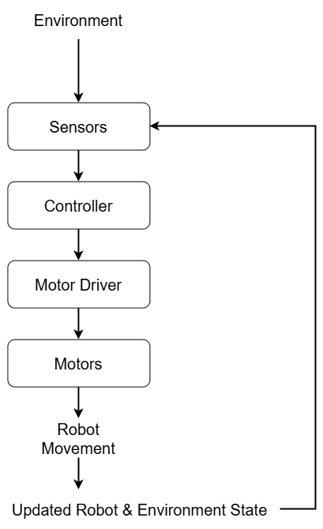
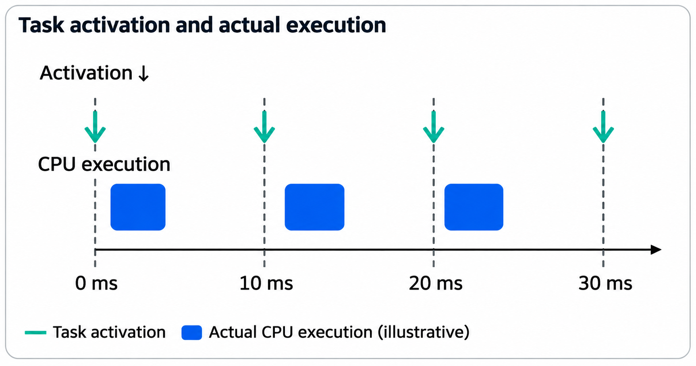

1.2 Real-time Requirements in Robotics¶
1.2.1 How does a robot interact with its environment?¶
A robot interacts with the physical world through three fundamental operations:
- Sensing: Collecting information about the robot and its environment.
- Processing: Analysing information and determining what action to take.
- Actuation: Executing commands through motors or other actuators.
These operations form a continuous cycle.
Example: Obstacle avoidance¶
Consider a mobile robot equipped with a distance sensor.
The robot performs the following operations:
- The sensor measures the distance to an obstacle.
- The controller reads the measurement.
- The controller determines whether the obstacle is too close.
- A command is sent to the motor driver.
- The motors respond to the command.
The cycle repeats while the robot is operating.

Key concept
A robot's response depends on the complete sensing–processing–actuation chain, not only on how quickly its controller executes.
For example, even if the controller performs its calculations very quickly, a slow sensor or delayed motor response can increase the total time needed to react.
1.2.2 Sources of delay in robotic systems¶
Every stage of the sensing–processing–actuation cycle requires some amount of time.
Common sources of delay include:
| Source | Description |
|---|---|
| Sensor acquisition | Time needed to obtain a measurement |
| Communication | Time needed to transfer sensor data or commands |
| Scheduling | Time spent waiting for the software task to execute |
| Processing | Time required to calculate a decision |
| Actuator response | Time needed for the actuator to begin or complete the requested action |
These delays may occur at different stages of the system.
Example: Robot obstacle response¶
Suppose a robot has the following response times:
| Operation | Time |
|---|---|
| Sensor measurement | 8 ms |
| Sensor communication | 2 ms |
| Scheduling delay | 3 ms |
| Controller processing | 4 ms |
| Motor command communication | 1 ms |
| Total | 18 ms |
For this simplified example, the total delay is:
The calculated response time of 18 ms represents the time from the beginning of the sensor measurement until the motor command is delivered.
It does not include the additional time required for the motor and robot to physically slow down or stop.
Furthermore, the 18 ms value represents one assumed execution scenario. It does not guarantee that every execution will complete within 18 ms. Actual response times may vary because of scheduling, communication, and other system delays.
Note
Adding individual delays is appropriate when the operations occur sequentially without overlapping.
In more complex systems, some operations may overlap, and the overall response time must be determined from the actual execution sequence.
Why is this important?¶
Suppose the software response deadline is 20 ms.
The example system completes its response in 18 ms and therefore meets this deadline.
However, it has only 2 ms of remaining time before the deadline.
If scheduling or communication takes longer than expected, the deadline may be missed.
This illustrates why engineers must consider the entire timing chain rather than only the processing time of the controller.
1.2.3 Different robotic functions have different timing requirements¶
Not all robotic tasks need to execute at the same speed.
Consider a mobile robot performing several operations simultaneously.
| Robotic function | Example timing requirement | Reason |
|---|---|---|
| Motor control | Update every 10 ms | Maintain controlled motion |
| Distance sensing | Measure every 50 ms | Detect nearby obstacles |
| Localization | Update every 100 ms | Estimate robot position |
| Status reporting | Update every 1 s | Inform the user about robot state |
| Data logging | Save data every 5 s | Store information for later analysis |
These are illustrative values, not universal requirements.
The appropriate timing depends on the robot's speed, hardware, control algorithms, operating environment, and system requirements.
For example, a robot moving at high speed may need to detect and respond to obstacles more quickly than a slow-moving robot.
Similarly, a motor controller may need frequent updates, while a user-interface display can often tolerate longer delays.
Remember
A robotic system may contain several software tasks with different execution periods and deadlines.
A central challenge in real-time programming is ensuring that important tasks meet their timing requirements while sharing limited computing resources.
Execution period versus deadline¶
Two important timing concepts are the period and the deadline.
- Period: The time between consecutive intended activations of a recurring task.
- Deadline: The latest time by which a task must complete, measured relative to its activation or another defined reference event.
For example, suppose a motor-control task is activated every 10 ms, but each execution must finish within 5 ms of its activation.
In this case:
- Period: 10 ms
- Relative deadline: 5 ms
The task is activated every 10 ms, but it has only 5 ms to complete each execution.
Note
A task's period and deadline are not necessarily equal. Their values depend on the system's requirements.
1.2.4 Periodic and Event-Driven Operations¶
Robotic software systems often perform multiple tasks, such as reading sensors, controlling motors, and processing communication messages. These tasks do not necessarily become ready to execute at the same time or for the same reason.
Two common ways of organising task activation are periodic activation and event-driven activation.
Before examining these approaches, it is important to distinguish between three concepts:
- Task activation (release): The moment a new instance of a task becomes ready to execute.
- Task execution: The time during which the processor actually runs the task.
- Task completion: The moment the task finishes its work.
A task may become ready to execute but have to wait because the processor is busy with another task.
Key distinction
Activation does not necessarily mean immediate execution.
A task may be activated at a particular time, but its actual execution can begin later due to scheduling delays.
Periodic operations¶
A periodic task is a software task that is activated at regular time intervals.
For example, a motor-control task may be activated every 10 ms to calculate and update the commands sent to the motors.
Its intended activation times could be:
The time between consecutive intended activations is called the period.
For this example:
The corresponding activation frequency is:
Converting milliseconds to seconds:
Therefore:
This means that the motor-control task is intended to be activated 100 times per second.
However, the actual execution of each task instance may begin later because the processor could be busy executing another task.
Example: Activation versus execution¶
Consider a motor-control task with a period of 10 ms.
| Task instance | Activation time | Actual execution start | Completion time |
|---|---|---|---|
| 1 | 0 ms | 1 ms | 4 ms |
| 2 | 10 ms | 11.2 ms | 14.6 ms |
| 3 | 20 ms | 20.7 ms | 23.8 ms |

Notice that:
- The task is activated at regular 10 ms intervals.
- The actual execution starts at slightly different times.
- Each task instance takes some time to complete.
The difference between the activation time and the actual execution start time is the scheduling delay in this simplified example.
For instance, the second task instance is activated at 10 ms but starts executing at 11.2 ms.
Its scheduling delay is:
Note
A periodic task has regular intended activation times, but its actual execution start times may vary.
The task must also satisfy any specified deadline, which may be shorter than its period.
Typical periodic operations in robotics include:
- Reading sensors at regular intervals.
- Updating motor-control commands.
- Estimating the robot's position.
- Monitoring battery voltage.
- Recording diagnostic information.
Event-driven operations¶
An event-driven task is activated in response to a particular event rather than according to a fixed periodic schedule.
The event may occur at an unpredictable time.
Examples include:
- A communication message arrives.
- A limit switch changes state.
- A hardware interrupt is generated.
- A new sensor measurement becomes available.
- A user presses a stop button.
For example, a robot may receive a wireless command at an unpredictable time.
When the message arrives, the system can activate a command-processing task.
However, just as with periodic tasks, activation does not necessarily mean immediate execution.
The task may have to wait until the processor becomes available or the scheduler selects it to run.
Example: Wireless command processing¶
Suppose a robot receives a wireless command at 125 ms.
The following events occur:
| Event | Time |
|---|---|
| Wireless message arrives | 125 ms |
| Command-processing task is activated | 125 ms |
| Task begins execution | 127 ms |
| Task completes processing | 130 ms |
In this example:
- The task is activated when the message arrives.
- The task begins executing 2 ms later.
- The task completes processing 5 ms after the message arrives.
If the requirement is to complete processing within 10 ms after receiving the message, this execution meets the deadline.
Note
Event-driven does not automatically mean real-time.
An event-driven task must still satisfy its timing requirements if the application requires a bounded response.
Similarly, a periodic task is not necessarily hard real-time.
Comparison: Periodic versus event-driven tasks¶
| Feature | Periodic task | Event-driven task |
|---|---|---|
| Activation | At regular time intervals | In response to an event |
| Example | Motor-control update | Incoming communication message |
| Timing | Defined activation period | Depends on event arrival |
| Actual execution | May be delayed by scheduling | May be delayed by scheduling |
| Typical requirement | Complete each instance before its deadline | Respond within a specified time after the event |
Both approaches are widely used in robotics.
A robotic system may contain periodic and event-driven tasks operating simultaneously.
For example, a mobile robot might periodically update its motor-control commands while also responding to incoming wireless messages.
Task activation versus scheduling
Periodic and event-driven operations describe when software tasks become ready to execute.
These concepts are related to, but different from, clock-driven and event-driven scheduling, which describe how scheduling decisions are triggered or organised (Read More).
For example, a periodic motor-control task and an event-driven communication task can both be managed by the same operating-system scheduler.
We will explore scheduling mechanisms in Module 2.
1.2.5 How robot speed affects timing requirements¶
Timing requirements are often related to how quickly a robot moves.
Consider a mobile robot approaching an obstacle.
If the robot travels at a constant speed \(v\), the distance it travels during a time interval \(t\) is:
where:
- \(d\) = distance traveled (m)
- \(v\) = robot speed (m/s)
- \(t\) = elapsed time (s)
Example 1: Slow-moving robot¶
Suppose a robot moves at:
Its software takes 100 ms to respond to an obstacle.
Convert the response time:
The robot travels:
The robot moves 2 cm during the response delay.
Example 2: Faster-moving robot¶
Now suppose the robot moves at:
With the same response delay:
The faster robot travels 10 cm during the same delay.
Comparison¶
| Robot speed | Response delay | Distance traveled |
|---|---|---|
| 0.2 m/s | 100 ms | 2 cm |
| 0.5 m/s | 100 ms | 5 cm |
| 1.0 m/s | 100 ms | 10 cm |
| 2.0 m/s | 100 ms | 20 cm |
These calculations assume that the robot continues moving at a constant speed throughout the response delay.
Importantly, the calculated distance represents only the distance traveled before the robot begins responding to the stop command.
Even after the stop command is issued, the robot may continue moving while its motors slow down.
Therefore, the total stopping distance can be expressed as:
where:
\(d_{\text{response}}\) = distance traveled during the response delay, and
\(d_{\text{braking}}\) = additional distance traveled while slowing down.
For example, if a robot travels 10 cm during the response delay and another 15 cm while braking:
The robot therefore requires at least 25 cm to stop under these assumed conditions.
What can we conclude?¶
As robot speed increases, a fixed response delay results in a greater distance traveled.
Therefore, faster-moving robots may require shorter response times, earlier obstacle detection, greater stopping distances, or a combination of these measures.
Timing requirements should be derived from the physical behavior and safety needs of the system.
1.2.6 Timing requirements and task priorities¶
A robot may execute several software tasks at the same time. For instance, motor control, sensor acquisition, obstacle detection, data logging, user-interface updates. These tasks compete for computing resources.
If a noncritical task occupies the processor while an important control task is waiting, the control task may be delayed.
Real-time systems therefore use scheduling mechanisms to determine which tasks execute and when.
Some tasks may be assigned higher scheduling priorities because their timing requirements are more demanding.
For example, a motor-control task may need to execute before a less time-critical data-logging task.
However, assigning a higher priority does not automatically guarantee that a task will meet its deadline. Execution times, resource sharing, scheduling delays, and other factors must also be considered.
We will explore task scheduling and priorities in detail in Module 2.
1.2.7 From application requirements to software requirements¶
A useful engineering approach is to begin with what the robot must accomplish and then identify the corresponding software timing requirements.
Consider the following simplified example.
Application requirement:
A mobile robot must detect nearby obstacles and respond before travelling an excessive distance.
Possible derived software requirements:
- The distance sensor shall provide a new measurement at least every 50 ms.
- The obstacle-processing task shall complete within 10 ms after receiving a valid measurement.
- The motor-command task shall deliver a STOP command within 10 ms after an obstacle condition is identified.
These requirements describe specific operations that can be implemented and tested.
Engineering principle
Good real-time requirements should be specific, measurable, and testable.
For example:
Vague requirement: "The robot should respond quickly."
Measurable requirement: "The controller shall produce a STOP command within 20 ms after receiving a valid obstacle-detection event."
The second statement provides a clear criterion for testing the software.
Understanding the complete response time¶
The three requirements describe different stages of the robot's response.
Suppose an obstacle appears immediately after the sensor has taken a measurement.
If the sensor provides a new measurement every 50 ms, the robot may have to wait almost 50 ms before the obstacle is detected.
After receiving the new measurement:
- The obstacle-processing task may take up to 10 ms.
- The motor-command task may take another 10 ms.
Under these simplified assumptions, the total time could approach:
This example assumes that the specified delays cover the relevant stages and that no additional delays occur. A real system may also introduce sensor acquisition, communication, scheduling, and actuator delays.
Key distinction
Software response time may be measured from the moment a valid sensor measurement is received.
End-to-end response time considers the time from the occurrence of a physical event until the required system response is produced.
These are different timing requirements and must not be confused.
How can we verify timing requirements?¶
Timing requirements should be measurable so that engineers can determine whether the system satisfies them.
One approach is to record timestamps at important stages of execution.
For example:
| Event | Timestamp |
|---|---|
| Valid obstacle measurement received | 100 ms |
| Obstacle-processing task completed | 107 ms |
| STOP command delivered | 115 ms |
The processing time is:
The motor-command delivery time after obstacle identification is:
Both operations satisfy their respective 10 ms deadlines in this execution.
The total software response time is:
This example demonstrates how timestamps can be used to evaluate timing requirements.
However, observing one successful execution does not prove that every future execution will meet its deadline. Engineers must consider timing variations and the system's operating conditions.
Later in this course, you will use C++ to measure execution times and investigate how scheduling affects task timing.